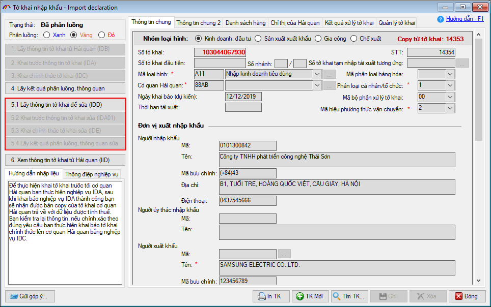
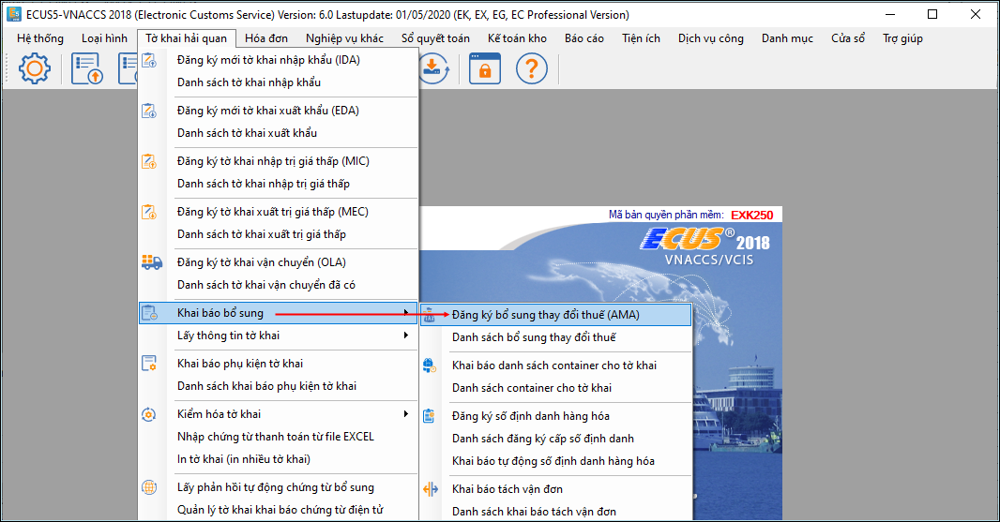

Tờ khai là luồng Xanh hoặc đã được xử lý của cơ quan Hải quan thì không thể dùng các nghiệp vụ này để sửa mà người khai phải sử dụng:
+ Nghiệp vụ AMA: để khai sửa đổi, bổ sung về thuế và các thông tin cho dòng hàng, để sử dụng nghiệp vụ này, bạn vào tab "Kết quả xử lý tờ khai" chọn nghiệp vụ "Đăng ký bổ sung thay đổi thuế AMA" hoặc vào menu "Tờ khai hải quan" và chọn mục "Khai bổ sung":

+ Sử dụng công văn đề nghị: Nếu muốn sửa đổi bổ sung thông tin chung cho tờ khai thì người khai cần gửi công văn để cơ quan Hải quan xem xét và tiến hành sửa đổi.